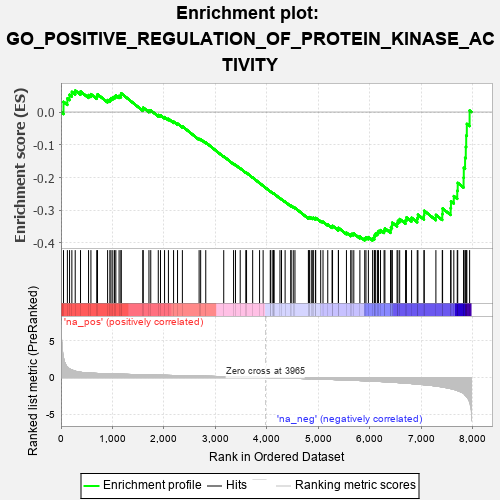
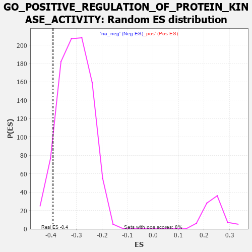

| | | Dataset | 7d |
| Phenotype | NoPhenotypeAvailable |
| Upregulated in class | na_neg |
| GeneSet | GO_POSITIVE_REGULATION_OF_PROTEIN_KINASE_ACTIVITY |
| Enrichment Score (ES) | -0.39247847 |
| Normalized Enrichment Score (NES) | -1.2783827 |
| Nominal p-value | 0.07189543 |
| FDR q-value | 0.4997393 |
| FWER p-Value | 1.0 |
Table: GSEA Results Summary

Fig 1: Enrichment plot: GO_POSITIVE_REGULATION_OF_PROTEIN_KINASE_ACTIVITY
Profile of the Running ES Score & Positions of GeneSet Members on the Rank Ordered List
| PROBE | GENE SYMBOL | GENE_TITLE | RANK IN GENE LIST | RANK METRIC SCORE | RUNNING ES | CORE ENRICHMENT | | 1 | TGFB3 | | | 49 | 2.654 | 0.0311 | No |
| 2 | ADCY8 | | | 124 | 1.418 | 0.0417 | No |
| 3 | AXIN1 | | | 166 | 1.159 | 0.0528 | No |
| 4 | SPDYA | | | 211 | 1.026 | 0.0616 | No |
| 5 | HGF | | | 276 | 0.870 | 0.0657 | No |
| 6 | CLSPN | | | 379 | 0.719 | 0.0629 | No |
| 7 | PKN1 | | | 535 | 0.619 | 0.0518 | No |
| 8 | CCNB1 | | | 581 | 0.601 | 0.0546 | No |
| 9 | XRCC6 | | | 694 | 0.560 | 0.0482 | No |
| 10 | CDC6 | | | 709 | 0.557 | 0.0543 | No |
| 11 | STOX1 | | | 905 | 0.506 | 0.0366 | No |
| 12 | CCND2 | | | 949 | 0.496 | 0.0381 | No |
| 13 | DVL3 | | | 971 | 0.490 | 0.0423 | No |
| 14 | TELO2 | | | 1006 | 0.482 | 0.0448 | No |
| 15 | AKT1 | | | 1040 | 0.476 | 0.0473 | No |
| 16 | FZD10 | | | 1065 | 0.470 | 0.0508 | No |
| 17 | SRC | | | 1128 | 0.459 | 0.0494 | No |
| 18 | CKS2 | | | 1165 | 0.452 | 0.0512 | No |
| 19 | CCNY | | | 1168 | 0.451 | 0.0573 | No |
| 20 | ERP29 | | | 1589 | 0.376 | 0.0091 | No |
| 21 | CCNK | | | 1596 | 0.374 | 0.0136 | No |
| 22 | TPX2 | | | 1708 | 0.355 | 0.0045 | No |
| 23 | MRNIP | | | 1743 | 0.346 | 0.0050 | No |
| 24 | PAK3 | | | 1889 | 0.322 | -0.0089 | No |
| 25 | HACD3 | | | 1932 | 0.315 | -0.0098 | No |
| 26 | RAF1 | | | 2011 | 0.303 | -0.0155 | No |
| 27 | CENPE | | | 2086 | 0.293 | -0.0208 | No |
| 28 | SYK | | | 2186 | 0.278 | -0.0295 | No |
| 29 | SHC2 | | | 2263 | 0.266 | -0.0354 | No |
| 30 | MIF | | | 2357 | 0.252 | -0.0437 | No |
| 31 | SASH1 | | | 2682 | 0.201 | -0.0821 | No |
| 32 | PHB2 | | | 2712 | 0.197 | -0.0830 | No |
| 33 | SYAP1 | | | 2811 | 0.182 | -0.0929 | No |
| 34 | ERN2 | | | 3160 | 0.129 | -0.1354 | No |
| 35 | TAB1 | | | 3351 | 0.097 | -0.1582 | No |
| 36 | DDX3X | | | 3388 | 0.091 | -0.1615 | No |
| 37 | CDK5 | | | 3480 | 0.080 | -0.1720 | No |
| 38 | MAPK3 | | | 3589 | 0.062 | -0.1848 | No |
| 39 | DOK7 | | | 3603 | 0.059 | -0.1857 | No |
| 40 | DAXX | | | 3722 | 0.038 | -0.2002 | No |
| 41 | DGKQ | | | 3856 | 0.020 | -0.2168 | No |
| 42 | NRG3 | | | 3925 | 0.005 | -0.2254 | No |
| 43 | TAL1 | | | 4064 | -0.018 | -0.2427 | No |
| 44 | CSF1 | | | 4074 | -0.019 | -0.2436 | No |
| 45 | MTOR | | | 4114 | -0.025 | -0.2482 | No |
| 46 | ABL1 | | | 4125 | -0.027 | -0.2491 | No |
| 47 | PLCE1 | | | 4127 | -0.028 | -0.2488 | No |
| 48 | CRK | | | 4139 | -0.031 | -0.2498 | No |
| 49 | RPTOR | | | 4252 | -0.050 | -0.2633 | No |
| 50 | WNT11 | | | 4282 | -0.056 | -0.2662 | No |
| 51 | ADRB2 | | | 4352 | -0.068 | -0.2741 | No |
| 52 | ERCC6 | | | 4464 | -0.087 | -0.2870 | No |
| 53 | LRRK2 | | | 4467 | -0.087 | -0.2860 | No |
| 54 | ILK | | | 4510 | -0.096 | -0.2900 | No |
| 55 | NTRK2 | | | 4543 | -0.104 | -0.2926 | No |
| 56 | TNIK | | | 4804 | -0.158 | -0.3234 | No |
| 57 | FBXW7 | | | 4816 | -0.161 | -0.3226 | No |
| 58 | TAOK3 | | | 4823 | -0.162 | -0.3211 | No |
| 59 | DLG1 | | | 4860 | -0.169 | -0.3233 | No |
| 60 | CLU | | | 4889 | -0.174 | -0.3244 | No |
| 61 | MARK2 | | | 4899 | -0.177 | -0.3230 | No |
| 62 | FZD4 | | | 4940 | -0.186 | -0.3255 | No |
| 63 | XRCC5 | | | 4946 | -0.187 | -0.3235 | No |
| 64 | PDPK1 | | | 5043 | -0.207 | -0.3328 | No |
| 65 | DRD2 | | | 5088 | -0.221 | -0.3353 | No |
| 66 | NEK10 | | | 5180 | -0.244 | -0.3434 | No |
| 67 | CDK1 | | | 5264 | -0.262 | -0.3503 | No |
| 68 | EPHA4 | | | 5273 | -0.265 | -0.3476 | No |
| 69 | FZD5 | | | 5386 | -0.292 | -0.3577 | No |
| 70 | DLG4 | | | 5388 | -0.293 | -0.3537 | No |
| 71 | FGFR1 | | | 5543 | -0.332 | -0.3687 | No |
| 72 | ROR2 | | | 5626 | -0.353 | -0.3741 | No |
| 73 | WNK1 | | | 5650 | -0.362 | -0.3720 | No |
| 74 | MADD | | | 5686 | -0.371 | -0.3712 | No |
| 75 | CCNT2 | | | 5804 | -0.406 | -0.3804 | No |
| 76 | VLDLR | | | 5898 | -0.434 | -0.3861 | Yes |
| 77 | STK11 | | | 5922 | -0.443 | -0.3828 | Yes |
| 78 | TTBK1 | | | 5969 | -0.460 | -0.3822 | Yes |
| 79 | FZD8 | | | 6051 | -0.490 | -0.3856 | Yes |
| 80 | DBNL | | | 6084 | -0.501 | -0.3826 | Yes |
| 81 | UBB | | | 6090 | -0.503 | -0.3762 | Yes |
| 82 | ATG13 | | | 6110 | -0.508 | -0.3714 | Yes |
| 83 | STK4 | | | 6145 | -0.518 | -0.3685 | Yes |
| 84 | EGR1 | | | 6165 | -0.527 | -0.3635 | Yes |
| 85 | INSR | | | 6204 | -0.538 | -0.3607 | Yes |
| 86 | STK39 | | | 6274 | -0.563 | -0.3616 | Yes |
| 87 | TRAF7 | | | 6290 | -0.571 | -0.3555 | Yes |
| 88 | RALB | | | 6399 | -0.617 | -0.3605 | Yes |
| 89 | UBE2N | | | 6407 | -0.621 | -0.3527 | Yes |
| 90 | CSK | | | 6428 | -0.630 | -0.3463 | Yes |
| 91 | MALT1 | | | 6432 | -0.634 | -0.3378 | Yes |
| 92 | ACE | | | 6526 | -0.674 | -0.3401 | Yes |
| 93 | DDR2 | | | 6542 | -0.681 | -0.3325 | Yes |
| 94 | ROBO1 | | | 6577 | -0.699 | -0.3269 | Yes |
| 95 | PAK1 | | | 6691 | -0.757 | -0.3307 | Yes |
| 96 | EGFR | | | 6708 | -0.765 | -0.3219 | Yes |
| 97 | ADAM9 | | | 6808 | -0.819 | -0.3230 | Yes |
| 98 | CSPG4 | | | 6918 | -0.878 | -0.3245 | Yes |
| 99 | LRP8 | | | 6931 | -0.889 | -0.3136 | Yes |
| 100 | PIBF1 | | | 7049 | -0.966 | -0.3148 | Yes |
| 101 | GRM5 | | | 7053 | -0.969 | -0.3016 | Yes |
| 102 | CIB1 | | | 7280 | -1.152 | -0.3141 | Yes |
| 103 | GRM1 | | | 7404 | -1.272 | -0.3119 | Yes |
| 104 | UBC | | | 7410 | -1.274 | -0.2946 | Yes |
| 105 | CALM1 | | | 7567 | -1.499 | -0.2933 | Yes |
| 106 | TRAF4 | | | 7573 | -1.514 | -0.2726 | Yes |
| 107 | PKD1 | | | 7628 | -1.611 | -0.2568 | Yes |
| 108 | ADCY1 | | | 7695 | -1.752 | -0.2406 | Yes |
| 109 | ADCY9 | | | 7704 | -1.783 | -0.2165 | Yes |
| 110 | TRAF6 | | | 7818 | -2.157 | -0.2005 | Yes |
| 111 | PKD2 | | | 7822 | -2.167 | -0.1703 | Yes |
| 112 | GRM4 | | | 7847 | -2.393 | -0.1397 | Yes |
| 113 | TRAF2 | | | 7861 | -2.481 | -0.1064 | Yes |
| 114 | CALM3 | | | 7869 | -2.525 | -0.0717 | Yes |
| 115 | FYN | | | 7881 | -2.622 | -0.0362 | Yes |
| 116 | ARRB1 | | | 7935 | -3.377 | 0.0046 | Yes |
Table: GSEA details [plain text format]

Fig 2: GO_POSITIVE_REGULATION_OF_PROTEIN_KINASE_ACTIVITY: Random ES distribution
Gene set null distribution of ES for GO_POSITIVE_REGULATION_OF_PROTEIN_KINASE_ACTIVITY